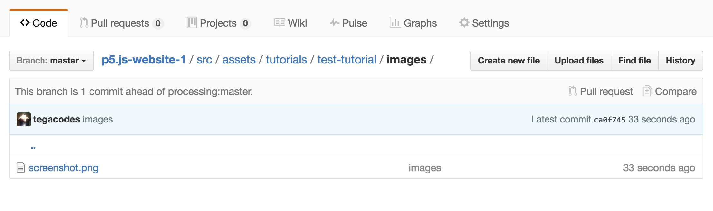

Processing fun times JavaScript quirkiness
Processing simplicity times JavaScript flexibility
Processing intuition times JavaScript power
Processing creativity times JavaScript dynamism
Processing community times JavaScript community
the power of Processing times the reach of JavaScript
p5.jsチュートリアル貢献ガイド
私たちは、教育者、貢献者、そして一般の愛好家にp5jsチュートリアルを寄稿することを勧めます。p5jsプロジェクトは、クリエィティブコーディングとオープンソース開発を多様なコミュニティにもっとアクセスしやすくしており、開発プロセスのすべての面でチュートリアルを公開することに張り切っています。これまでの学習教材には、p5の学習ガイド、プログラミング手法、オープンソースプロジェクトに貢献する方法などが含まれています。
私たちは新しいチュートリアルの寄稿を歓迎します。このガイドはどのように新しいチュートリアルを提案し、準備し、貢献するかを概説しています。
始め方:
- 提案するチュートリアルが既存のチュートリアルと重複していないことを確認してください。進行中のチュートリアルの概要を説明したスプレッドシートがここ にあります。もし、あなたの提案するチュートリアルが進行中でしたら、あなたは仕事に参加して進行中のチュートリアルに貢献できる場合があるので、私たちに連絡してください。
- あなたのトピックがまだカバーされておらず、進行中のものとしてリストアップされていない場合は、あなたが提案するチュートリアルについての説明をeducation@p5js.orgまでメールを送ってください。
p5jsチュートリアルをオンラインで公開する方法:
チュートリアルの公開準備ができたら、次の手順に従ってp5jsのWebサイトのコンテンツを準備してください。
チュートリアルの内容をこのベーシックな構造 のtutorial-name.hbsファイルとして準備します。このファイルに示されているように、ヘッダーは以下のように含まれている必要があります:

The folder containing your tutorial will be placed in the 'tutorials' folder of the p5js site. The file called index.hbs is the p5.js tutorials landing page, and the test-tutorial.hbs file is the test tutorial.
All content should go in the: <section role="region" label="main content"> </section> tags on the page, with formatting defined by the <h1> and <h2> tags, the <p> paragraph tags as is done shown on thetest tutorial page.
If your tutorial contains images, they are to be placed in the assets folder of the p5 site, in the location src/assets/learn/test-tutorial/images as shown below.
To correctly format code in the html of the page use the tag:
<pre><code class="language-javascript">
Your code here!
</code></pre>
Embedding p5.js sketches
Using p5js means you can illustrate your tutorial with animated, interactive or editable code examples to demonstrate programming concepts. Your examples should be prepared as p5.js sketches and can be embedded into the tutorial in two ways.
- If the example is to be editable like in the reference pages of the p5js site, the p5 sketch should be embedded into the html page using the p5js widget. Follow this guide on how to embed p5js sketches using the widget written by Toolness. You can also see this in action on the test tutorial page.
- If the example is to be animated and/or interactive but not editable. The p5.js sketch should be embedded into the page as an iframe as described below.
Embed a p5 sketch using an iframe
An iframe is like creating a window through which you can see another page, sandboxed from the rest of your page. In this case it will be a window to the index.html containing your p5.js sketch.

Put your p5 sketches in the /src/assets/learn folder of the site, in a folder labelled with the name of your sketch as shown in the screenshot. This is where all the images and p5 sketches linked by iframe should be stored.

In the subfolders containing your p5 examples there should be a sketch.js file and the embed.html file for the sketch.
Make sure your embed.html file has the correct paths to the p5 libraries of the site. If your file structure is the same as above, the path to the p5.js library should be "../../../js/p5.min.js".
You can then embed the p5js index files as iframes in the .hbs file that contains your tutorial content. The embed code for the iframe would then be:
<iframe src="http://p5js.org/assets/learn/tes-tutorial/embed.html" width="600px" height="400px">
</iframe>
Styling for the iframe (this could directly into the post or in a stylesheet):
<style> iframe{ border: none; } </style>
Here you can see the naked sketch running:
http://staging.p5js.org/assets/learn/test-tutorial/embed.htmlAnd here it is embedded in the p5 site using the code below:
http://staging.p5js.org/learn/test-tutorial.htmlOne thing to note is that you need to manually set the size of the iframe, so it works best if things are a standard size.
Also note that the links to the p5.js library files do not happen from the .eps page with all the tutorial content. Instead they will be located in the html page that is rendering your sketch (in this case, called embed.html).
More information on embedding p5.js sketches can be found here.
Finishing up
Once your have finished writing your tutorial and your content has been given the thumbs up. Fork the p5.js website repository, prepare your content as described above and then issue a pull request to the p5.js website repository so we can publish your contribution!
Thank you!